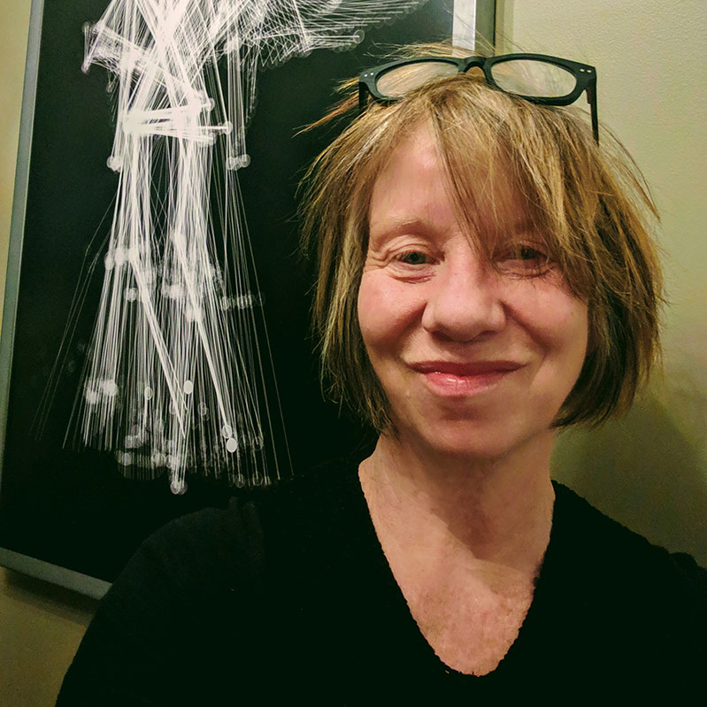

 Judith Doyle Using depth cameras adapted for motion capture, we record gesture on location and in the studio, and create long-distance networked performances, digital prints, and most recently, moving image point clouds in the Unreal Engine (AR/VR).
Raul Altosaar Using depth cameras adapted for motion capture, we record gesture on location and in the studio, and create long-distance networked performances, digital prints, and most recently, moving image point clouds in the Unreal Engine (AR/VR).
William Wu Using depth cameras adapted for motion capture, we record gesture on location and in the studio, and create long-distance networked performances, digital prints, and most recently, moving image point clouds in the Unreal Engine (AR/VR).